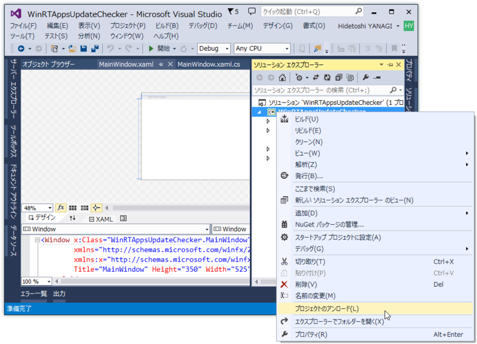
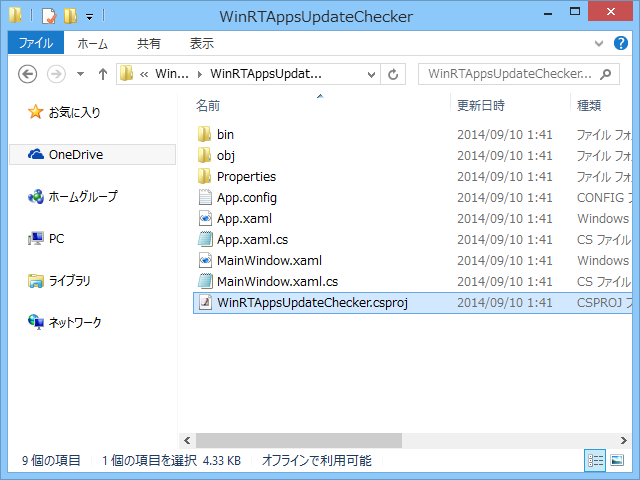
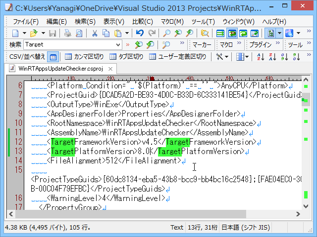
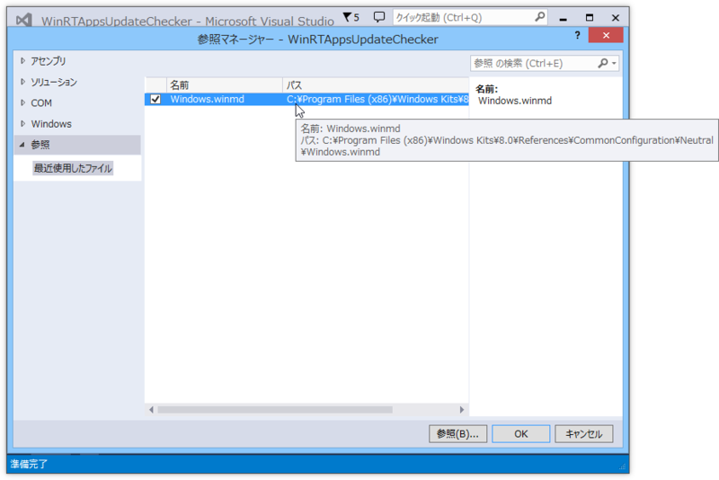
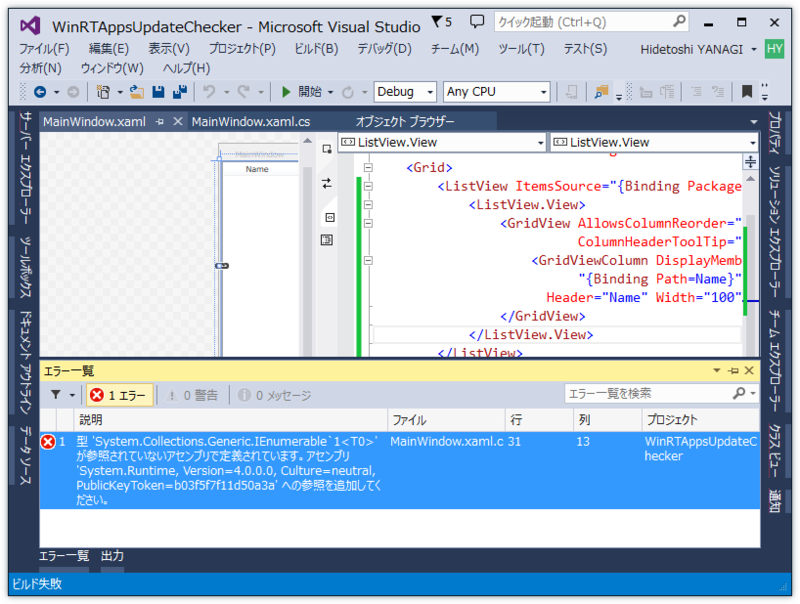
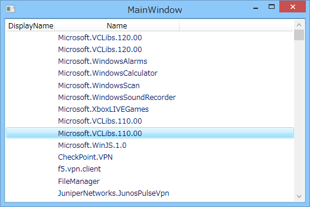

WinRT：システムにインストールされた Windows ストア アプリを列挙する
公開日：
WPF アプリケーションからシステムにインストールされた Windows ストア アプリを列挙するには、この Windows Runtime API を使えばいいらしい。
ちなみに、Windows ストア アプリからは利用できないとのこと。
準備
というわけで、この API を使うために諸々の準備を行う。
ターゲットプラットフォームバージョンを指定
まず *.csproj ファイルをテキストエディターなどで開き、ターゲットプラットフォームとして Windows 8 以降を指定する。

プロジェクトを一度アンロード。

プロジェクトフォルダをエクスプローラで開く。いつからかコンテキストメニューにこのコマンドが追加されていてうれしい。

TargetPlatformVersionTargetPlatformSDK.TargetPlatformVersion プロパティ (Microsoft.Build.Utilities) を記述して保存。プロジェクトをリロード。
winmd を参照に追加

次に、winmd を参照に追加。パスが長いけれど、コモンダイアログで winmd を検索すれば簡単に見つかる。これで IntelliSense で PackageManager クラスが補完できるようになるはず。
デスクトップアプリから Windows Runtime API を使う時には、毎回こういう作業が必要になるみたい。知らんけど。
コーディング
これで準備はだいたい完了なので、コードを記述していく。
コードビハインド
簡便のため、ViewModel は匿名型で済ませる。
namespace WinRTAppsUpdateChecker { using Windows.Management.Deployment;/// <summary> /// MainWindow.xaml の相互作用ロジック /// </summary> public partial class MainWindow : Window { public MainWindow() { InitializeComponent();
var manager = new PackageManager();
DataContext = new { Packages = manager.FindPackagesForUser(string.Empty), }; } } }
XAML
リストボックスを用意するだけ。Packageパッケージ Class (Windows) の情報は Package Class 直下にぶら下がっているものと、Package.Id にぶら下がっているものがあるっぽいが、前者はあまり役に立たん感じ（後述）。
<ListView ItemsSource="{Binding Packages}"> <ListView.View> <GridView> <GridViewColumn DisplayMemberBinding="{Binding Path=DisplayName}" Header="DisplayName"/> <GridViewColumn DisplayMemberBinding="{Binding Path=Id.Name}" Header="Name"/> </GridView> </ListView.View> </ListView>
実行

実行するとエラーが発生するので、System.Rumtime を参照へ追加する（64bit Windows 8.1 Update/Visual Studio 2013 Update 3 で開発してるけれど、32bit版 .NET 4 のアセンブリでいいみたい？）。

残念ながら DisplayName はプロパティがあるにもかかわらず取得できない。ほんとこういうところクソだと思う。InstalledLocation にある AppxManifest.xml を読む必要がある。